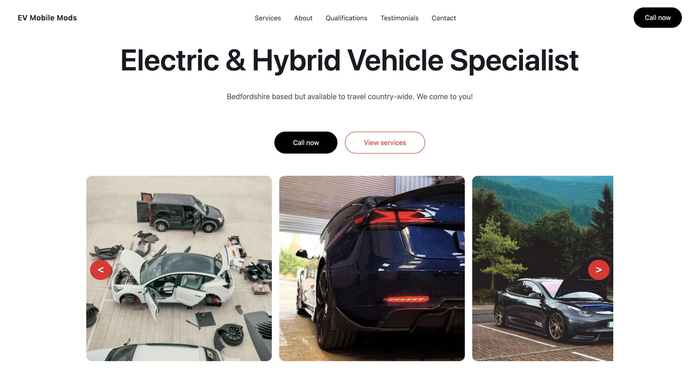
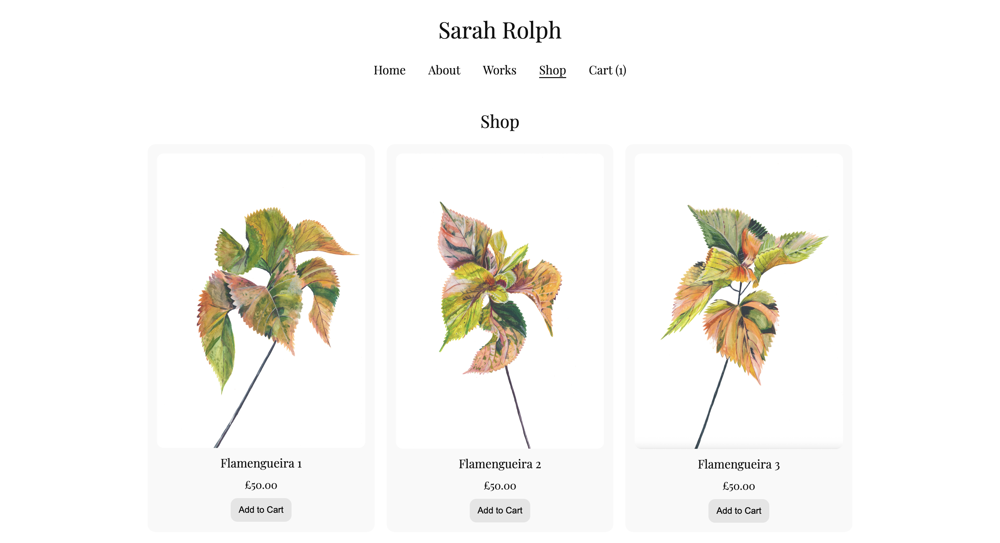
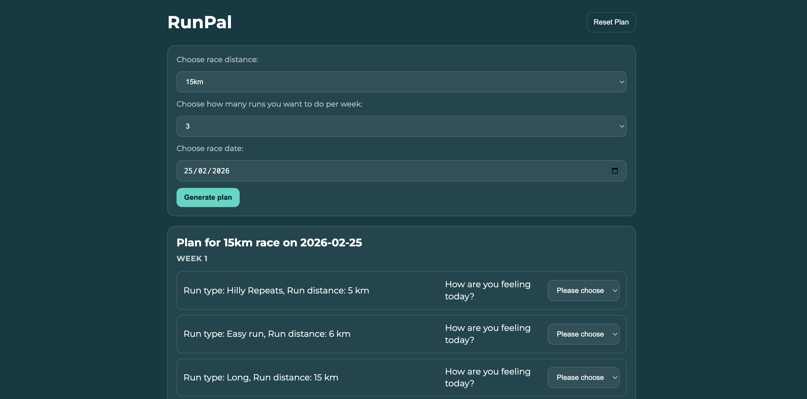
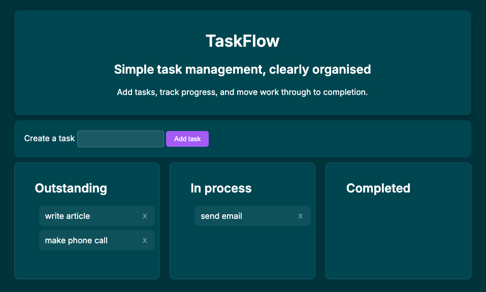

Sarah Hull
A web developer building clean, thoughtful web experiences.
HTML • CSS • JavaScript • C# • React • Python • MySQL
Projects

EV Mobile Mods
HTML • CSS • JavaScript
A fully responsive business website built for a real client in the automotive EV space.
The site was designed and developed from scratch, with a focus on clarity, performance,
and usability across devices.
- Custom HTML, CSS, and JavaScript (no frameworks)
- Responsive layout with mobile-first considerations
- Image carousel with lightbox gallery functionality
- Accessible navigation and semantic markup
- Deployed via Netlify with continuous deployment from GitHub
- Ongoing iteration based on client feedback

Sarah Rolph Illustration
HTML • CSS • JavaScript
A full-stack web application featuring a gallery and shop powered by a backend service.
While the content is illustration-based, the primary focus of this project was designing,
building, and deploying a working frontend–backend system.
- Frontend built with HTML, CSS, and JavaScript
- Backend deployed on Railway, serving product data from a database
- API-driven, dynamic product listings
- Shopping cart functionality implemented in JavaScript
- Frontend and backend deployed separately and integrated in production
- Managed hosting and cost trade-offs by selectively running services

RunPal
HTML • CSS • JavaScript
RunPal is a lightweight, single-user running training plan generator that prioritises runner self-assessment
over aggressive optimisation.
- Dynamic plan generation
- Local persistence (no login)
- Wellness-based run adjustments
- Immediate feedback

TaskFlow
HTML • CSS • JavaScript
TaskFlow is a lightweight to-do list generator. It allows users to add new items and then track each item through to completion.
It uses a three-column kanban approach to allow users to keep track of the status of each item.
- Move items through outstanding, in process and completed statuses by clicking on the item
- Generated lists persist across page reloads using
- The same todo list is restored exactly as generated
Skills
Core
JavaScript (ES6+), HTML5, CSS3
Frameworks
React, Node.js, Express
Data
MySQL (schema design, queries)
Tools & Deployment
Git, GitHub, Netlify, Railway
About
I’m a junior full-stack developer with a background in FinTech, where I spent 11 years supporting senior leadership within fast-paced, product-driven teams.
Working closely with engineering and product teams gave me first-hand exposure to how software is built, prioritised, and shipped - and ultimately led me to transition into development myself.
Over the past 18 months, I’ve built and deployed production web applications, including a live client website and a full-stack application using Node.js and MySQL.
I enjoy working across the stack, turning requirements into structured solutions, and focusing on clarity, usability, and maintainability.
I’m currently seeking a junior software development role within a collaborative engineering team.